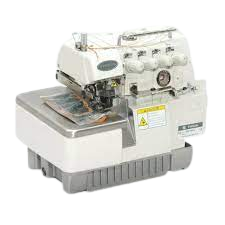
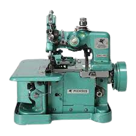
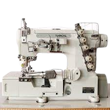

Mesin Tradisional
Mesin Highspeed

Mesin Obras Besar

Mesin Obras Kecil

Mesin Overdeck
Alamat: Jln. Langenharjo No.48, Jawa Tengah, Kec. Grogol, Kab. Sukoharjo
Google Maps : Alamat Toko disini
Mesin Tradisional
Mesin Highspeed
Mesin Obras Besar
Mesin Obras Kecil
Mesin Overdeck